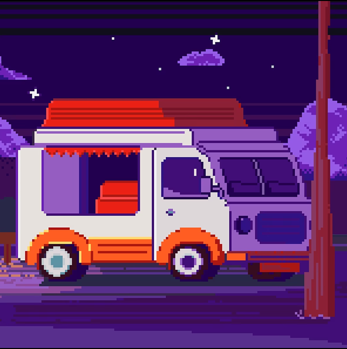

Фритрек и нулевой спринт: Подготовка к работе

<Предвкушение>Это было самое начало пути. На этом этапе важно было проникнуться основами и настроиться на учёбу. И, возможно, подумать, как новые знания могут повлиять на ваше будущее.
Начало выдалось захватывающим, фритрек оказался горяздо более насыщенным, чем я ожидал. Он позволил ещё раз окончательно убедиться, что курс, выбранный мной, приносит удовольствие. Очень интересно было попробовать свои силы.…
1 спринт: Я — чистый лист
На первых этапах мы работали со страхами и сомнениями, которые часто испытывают новички. Один из них — страх перед чистым листом. Это, конечно же, намного сложнее, чем боязнь куска бумаги. Часто за этим ощущением скрываются более глубокие вопросы: с чего начать? а вдруг будет слишком сложно? что, если я не справлюсь?
Первый спринт оказался очень познавательным и дал возможность приобрести базовые навыки в создании контейнеров с разным содержимым на странице. Здорово чувствовать, как мозг включается в работу и начинает перестраиваться под новый вид деятельности. Удалось немного поностальгировать и вспомнить обучение в ВУЗе.…
1 спринт: А если не получится?
Первый проект — позади! Но это всё ещё самое начало пути. Радость могла быстро померкнуть и смениться ожиданием провала. Или вы, наоборот, могли вдохновиться успехами и поверить в себя.
Не обошлось и без толики паники, когда казалось, что первый дедлайн приближается очень стремительно, а финальный проект далёк от завершения. Но удалось справиться, а замечания ревьюера позволили улучшить мои навыки и дали немало пищи к размышлению.…
2 спринт: Погоня за идеалом
На этом этапе вы уже достаточно разбирались в основах вёрстки, чтобы понять, как много ещё впереди. Вы могли попытаться погнаться за идеалом и понять, что он недостижим. А, может, вы вовсе и не подвержены перфекционизму и вместо того, чтобы сделать идеально, старались просто сделать.
Набравшись опыта в 1 спринте, я решил, что на те же грабли наступать во 2 спринте - моветон. Ох, как же я ошибался, из-за невнимательности после первой итерации сдачи проекта я не исправил критическое замечание и заново залил проект на ревью. А когда задание вернулось назад и я внёс, казалось бы, незначительные правки... вся страница уехала и пришлось потратить ещё кучу времени на доведение её до нужных кондиций.…
2 спринт: О тех, кто рядом
Всё это время вы были не одиноки (хотя, возможно, иногда и чувствовали, что одни против целого мира). Вас окружали одногруппники, команда сопровождения и просто близкие люди, которым можно пожаловаться, если очередной макет просто так не поддавался. Осваивать что-то новое легче, когда рядом есть единомышленники, не правда ли?
Команда сопровождения (и наставник Юрий и кураторы) постаралась максимально облегчить изучение материала. Очень много вопросов, которые возникали в голове потом удавалось найти разобранные наставником в Пачке. Было действительно здорово понимать, что не у одного меня возникают вопросы которые, для человека с опытом щёлкаются как орешки.…
3 спринт: Обходные стратегии
На этом курсе вы постоянно решали разные задачи. В какой-то момент вам могло показаться, что решения просто иссякли. Значит, пришло время посмотреть на задачу под другим углом.
Этот спринт был уже слегка полегче, удалось грамотно распределить своё время на изучени теоритической базы и вовремя начать проект.…
3 спринт: Когда опускаются руки
Во время учёбы часто возникает чувство, когда не знаешь, за что хвататься. Вроде и проектную пора сдавать, и задачи хочется порешать, и в теории получше разобраться, и жизнь не забыть пожить. В такие моменты очень нужна концентрация. Вспомните, откуда вы её черпали.
Наступил на те же грабли. Трижды рефакторил весь код финального проекта, а потом понял почему автотесты показывают разницу в темах. Всему виной оказалась 1 единственная отсутствующая буква в свойстве. Итог: проект сдан после мягкого дедлайна, а в голове намертво отложилась необходимость проверки каждого символа в именях классов.…
«Сейчас я здесь»
Сейчас вы уже очень много знаете о вёрстке. Но это только начало. Во-первых, впереди ещё много материала про «красотищу». Во-вторых, с окончанием курса учёба не заканчивается. Вёрстка — это целый мир. И этот мир постоянно меняется. Познать его полностью не получится, но это тот случай, когда важен сам процесс познания. Ведь часто путь — и есть результат.
4 спринт был очень интересным, понравилось наводить красотищу. Но вот финальный проект - это просто монстр. Такого объёмного ТЗ за всё время обучения я не видел ни разу, но вспоминая слова Юрия пришло понимание: сложность будет нарастать и пора привыкать к непростым, но интересным задачам.…